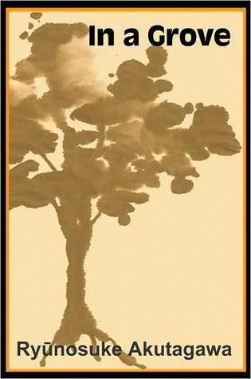

Rashōmon (羅生門) is a short story by Ryūnosuke Akutagawa based on tales from the Konjaku Monogatarishū.
Cogwheels is among the last pieces Akutagawa wrote, and much of its power stems from the knowledge that it is thinly veiled autobiography, the observations and thoughts of a man on the precipice.

In a Grove (藪の中, Yabu no naka), also translated as In a Bamboo Grove, is a Japanese short story by Ryūnosuke Akutagawa first published in 1922.[1][2] It was ranked as one of the "10 best Asian novels of all time" by The Telegraph in 2014
Hell Screen (地獄変, Jigokuhen) is a short story written by Japanese writer Ryūnosuke Akutagawa. It was a reworking of Uji Shūi Monogatari and originally published in 1918 as a serialization in two newspapers.[1] It was later published in a collection of Akutagawa short stories, Akutagawa Ryūnosuke zenshū.